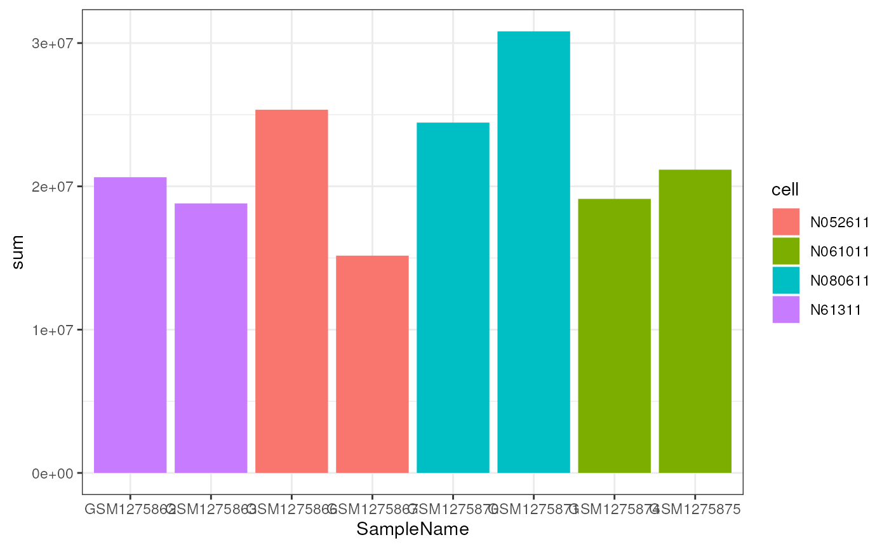
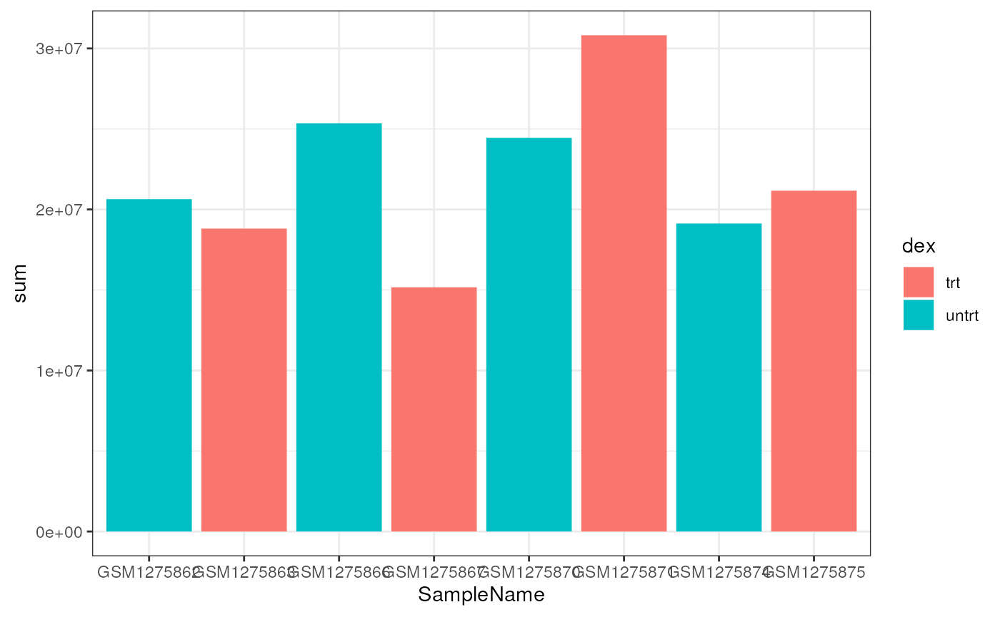
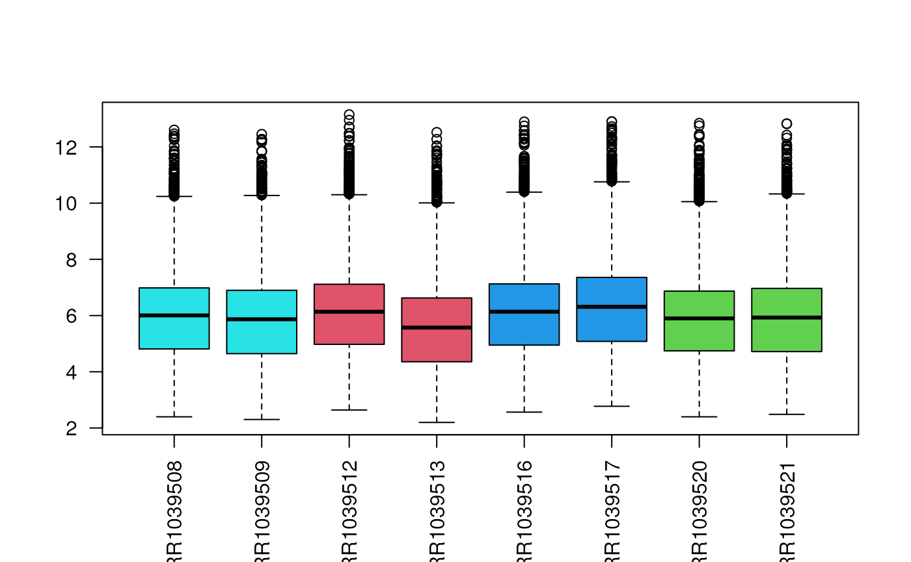
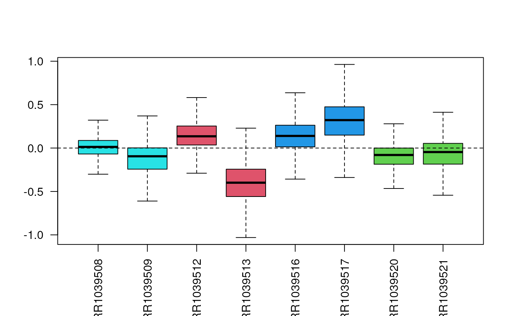
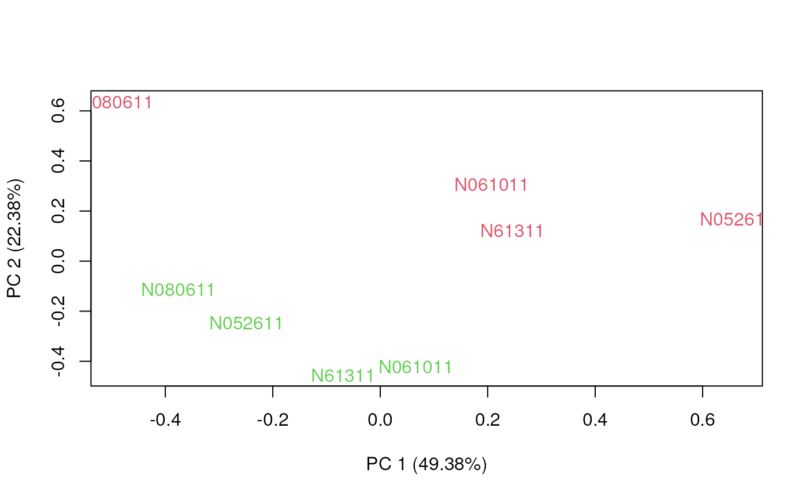
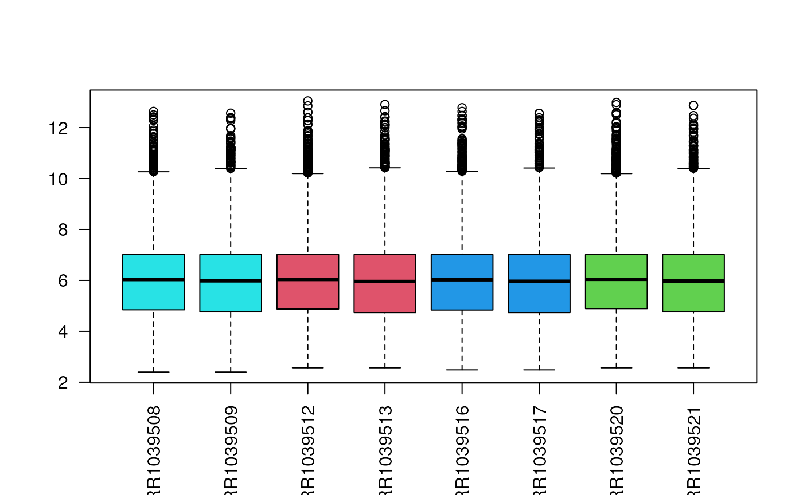
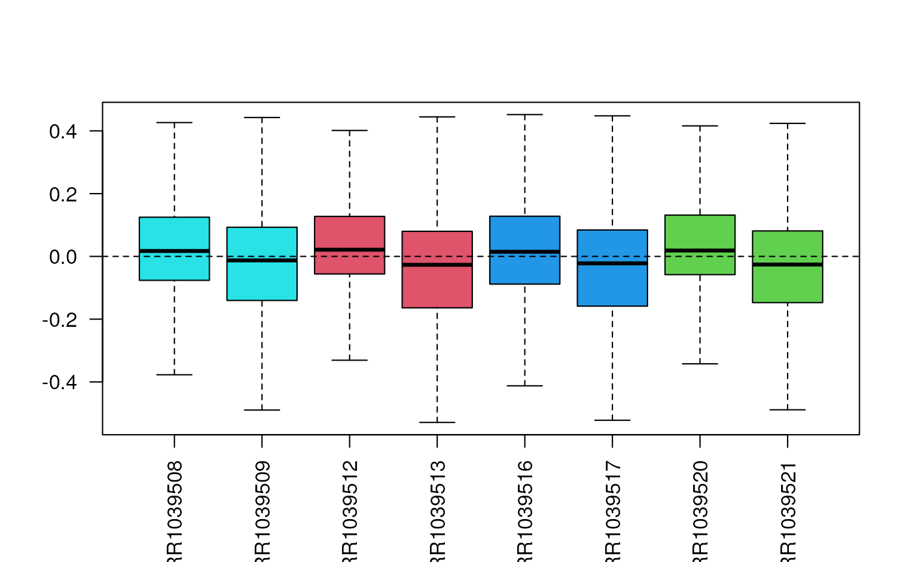
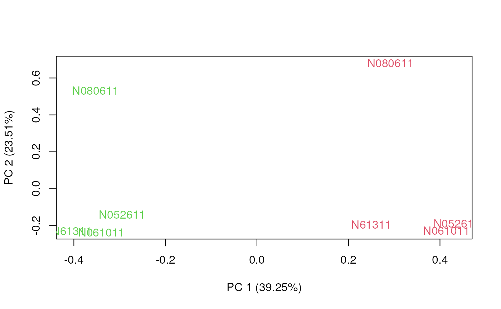

data(airway)
airway## class: RangedSummarizedExperiment
## dim: 63677 8
## metadata(1): ''
## assays(1): counts
## rownames(63677): ENSG00000000003 ENSG00000000005 ... ENSG00000273492
## ENSG00000273493
## rowData names(10): gene_id gene_name ... seq_coord_system symbol
## colnames(8): SRR1039508 SRR1039509 ... SRR1039520 SRR1039521
## colData names(9): SampleName cell ... Sample BioSample
colData(airway)## DataFrame with 8 rows and 9 columns
## SampleName cell dex albut Run avgLength
## <factor> <factor> <factor> <factor> <factor> <integer>
## SRR1039508 GSM1275862 N61311 untrt untrt SRR1039508 126
## SRR1039509 GSM1275863 N61311 trt untrt SRR1039509 126
## SRR1039512 GSM1275866 N052611 untrt untrt SRR1039512 126
## SRR1039513 GSM1275867 N052611 trt untrt SRR1039513 87
## SRR1039516 GSM1275870 N080611 untrt untrt SRR1039516 120
## SRR1039517 GSM1275871 N080611 trt untrt SRR1039517 126
## SRR1039520 GSM1275874 N061011 untrt untrt SRR1039520 101
## SRR1039521 GSM1275875 N061011 trt untrt SRR1039521 98
## Experiment Sample BioSample
## <factor> <factor> <factor>
## SRR1039508 SRX384345 SRS508568 SAMN02422669
## SRR1039509 SRX384346 SRS508567 SAMN02422675
## SRR1039512 SRX384349 SRS508571 SAMN02422678
## SRR1039513 SRX384350 SRS508572 SAMN02422670
## SRR1039516 SRX384353 SRS508575 SAMN02422682
## SRR1039517 SRX384354 SRS508576 SAMN02422673
## SRR1039520 SRX384357 SRS508579 SAMN02422683
## SRR1039521 SRX384358 SRS508580 SAMN02422677In this dataset, we have measurements for 63677 genes. Not all of them will be expressed in this particular system.
##
## FALSE TRUE
## 30208 33469In general, it is advisable to remove those genes with a low expression level. Often, we may consider a filter that keeps those genes that are expressed in at least some reads in a certain number of samples.
The filterByExpr function of the edgeR
package does that, considering by default 10 reads in at least 10
samples.
filter <- filterByExpr(airway)## Warning in filterByExpr.DGEList(y, design = design, group = group, lib.size =
## lib.size, : All samples appear to belong to the same group.
table(filter)## filter
## FALSE TRUE
## 49453 14224
filtered <- airway[filter,]
filtered## class: RangedSummarizedExperiment
## dim: 14224 8
## metadata(1): ''
## assays(1): counts
## rownames(14224): ENSG00000000003 ENSG00000000419 ... ENSG00000273382
## ENSG00000273486
## rowData names(10): gene_id gene_name ... seq_coord_system symbol
## colnames(8): SRR1039508 SRR1039509 ... SRR1039520 SRR1039521
## colData names(9): SampleName cell ... Sample BioSampleExploratory Data Analysis (EDA) is useful to highlight those genes that have lower quality or that can have a high leverage in the downstream analyses.
First, we need to compute the total number of mapped reads per sample.
airway$sum <- colSums(assay(airway))
df <- as.data.frame(colData(airway))
ggplot(df, aes(x=SampleName, y=sum, fill=cell)) +
geom_bar(stat="identity")

While there is clearly a difference in the total number of reads, it does not appear to be related to either cell type or treatment.
Another immediately available plot is the boxplot of the count distribution. Given the skewness of count distributions, we typically perform a log transformation.

Remember that the SummarizedExperiment object may
contain multiple matrices (with the same dimension). Hence, we can
“save” the log-transformed matrix in the object to avoid computing the
log every time that we want to plot their distribution.
## class: RangedSummarizedExperiment
## dim: 14224 8
## metadata(1): ''
## assays(2): counts logcounts
## rownames(14224): ENSG00000000003 ENSG00000000419 ... ENSG00000273382
## ENSG00000273486
## rowData names(10): gene_id gene_name ... seq_coord_system symbol
## colnames(8): SRR1039508 SRR1039509 ... SRR1039520 SRR1039521
## colData names(9): SampleName cell ... Sample BioSampleSometimes, the log transformation is not enough to highlight issues with the sample distributions and the need for normalization.
In such cases, we can consider applying the Relative Log Expression (RLE) transformation, defined as \[ z_{ij} = \log\left(\frac{y_{ij}}{\bar{y}_{\cdot j}}\right) = \log(y_{ij}) - \log(\bar{y}_{\cdot j}), \] where \(y_{ij}\) is the read count of gene \(j\) in sample \(i\) and \(\bar{y}_{\cdot j}\) is the median expression of gene \(j\) across all samples.
The EDASeq Bioconductor package contains the
plotRLE function, which can be simply used in this way.

To understand which sample characteristics influence gene expression, it is a good idea to observe the first two or three principal components. Ideally, we would like the samples to group by biological variables and not technical noise.
The plotPCA function of the EDASeq package
can be used for this goal. Alternatively, one can use any of the R
packages to compute the principal components.

Most of the differences that we see in the RLE plot are not driven by biological signal but due to technical differences between samples, e.g., the total number of reads sequenced for each sample.
We can try to remove such differences via a normalization procedure. There are several different normalization methods proposed for RNA-seq data, but the simplest and often most effective scale each sample by a constant.
The EDASeq package implements several such methods,
including the “upper-quartile” methods that “aligns” the upper quartile
of the distribution of each sample.
Again, we can store the normalized matrix into an assay of the object.
assay(filtered, "uq") <- betweenLaneNormalization(assay(filtered), which="upper")We can check with a boxplot that the normalization worked as planned.

Often, the RLE plot is useful to verify that the normalized data look good or to compare normalization methods. We want the median to be as close as possible to zero and the variability to be as balanced as possible between the samples.

Another useful diagnostic plot is the plot of the first two principal components. We expect the direction of most variability to be explained by biology rather than technical differences.

Unlike unnormalized data, after normalization the first principal component separates treated and control samples.
## R version 4.3.0 (2023-04-21)
## Platform: x86_64-pc-linux-gnu (64-bit)
## Running under: Ubuntu 22.04.2 LTS
##
## Matrix products: default
## BLAS: /usr/lib/x86_64-linux-gnu/openblas-pthread/libblas.so.3
## LAPACK: /usr/lib/x86_64-linux-gnu/openblas-pthread/libopenblasp-r0.3.20.so; LAPACK version 3.10.0
##
## locale:
## [1] LC_CTYPE=en_US.UTF-8 LC_NUMERIC=C
## [3] LC_TIME=en_US.UTF-8 LC_COLLATE=en_US.UTF-8
## [5] LC_MONETARY=en_US.UTF-8 LC_MESSAGES=en_US.UTF-8
## [7] LC_PAPER=en_US.UTF-8 LC_NAME=C
## [9] LC_ADDRESS=C LC_TELEPHONE=C
## [11] LC_MEASUREMENT=en_US.UTF-8 LC_IDENTIFICATION=C
##
## time zone: Etc/UTC
## tzcode source: system (glibc)
##
## attached base packages:
## [1] stats4 stats graphics grDevices utils datasets methods
## [8] base
##
## other attached packages:
## [1] ggplot2_3.4.3 EDASeq_2.34.0
## [3] ShortRead_1.58.0 GenomicAlignments_1.36.0
## [5] Rsamtools_2.16.0 Biostrings_2.68.1
## [7] XVector_0.40.0 BiocParallel_1.34.2
## [9] edgeR_3.42.4 limma_3.56.2
## [11] airway_1.20.0 SummarizedExperiment_1.30.2
## [13] Biobase_2.60.0 GenomicRanges_1.52.0
## [15] GenomeInfoDb_1.36.1 IRanges_2.34.1
## [17] S4Vectors_0.38.1 BiocGenerics_0.46.0
## [19] MatrixGenerics_1.12.3 matrixStats_1.0.0
##
## loaded via a namespace (and not attached):
## [1] DBI_1.1.3 bitops_1.0-7 deldir_1.0-9
## [4] biomaRt_2.56.1 rlang_1.1.1 magrittr_2.0.3
## [7] compiler_4.3.0 RSQLite_2.3.1 GenomicFeatures_1.52.1
## [10] png_0.1-8 systemfonts_1.0.4 vctrs_0.6.3
## [13] stringr_1.5.0 pkgconfig_2.0.3 crayon_1.5.2
## [16] fastmap_1.1.1 dbplyr_2.3.3 labeling_0.4.2
## [19] utf8_1.2.3 rmarkdown_2.24 ragg_1.2.5
## [22] purrr_1.0.2 bit_4.0.5 xfun_0.40
## [25] zlibbioc_1.46.0 cachem_1.0.8 jsonlite_1.8.7
## [28] progress_1.2.2 blob_1.2.4 highr_0.10
## [31] DelayedArray_0.26.7 jpeg_0.1-10 parallel_4.3.0
## [34] prettyunits_1.1.1 R6_2.5.1 bslib_0.5.1
## [37] stringi_1.7.12 RColorBrewer_1.1-3 rtracklayer_1.60.1
## [40] jquerylib_0.1.4 Rcpp_1.0.11 knitr_1.43
## [43] R.utils_2.12.2 Matrix_1.6-1 tidyselect_1.2.0
## [46] abind_1.4-5 yaml_2.3.7 codetools_0.2-19
## [49] hwriter_1.3.2.1 curl_5.0.2 lattice_0.21-8
## [52] tibble_3.2.1 withr_2.5.0 KEGGREST_1.40.0
## [55] evaluate_0.21 desc_1.4.2 BiocFileCache_2.8.0
## [58] xml2_1.3.5 pillar_1.9.0 filelock_1.0.2
## [61] generics_0.1.3 rprojroot_2.0.3 RCurl_1.98-1.12
## [64] hms_1.1.3 munsell_0.5.0 scales_1.2.1
## [67] glue_1.6.2 tools_4.3.0 interp_1.1-4
## [70] BiocIO_1.10.0 locfit_1.5-9.8 fs_1.6.3
## [73] XML_3.99-0.14 grid_4.3.0 latticeExtra_0.6-30
## [76] colorspace_2.1-0 AnnotationDbi_1.62.2 GenomeInfoDbData_1.2.10
## [79] restfulr_0.0.15 cli_3.6.1 rappdirs_0.3.3
## [82] textshaping_0.3.6 fansi_1.0.4 S4Arrays_1.0.5
## [85] dplyr_1.1.2 gtable_0.3.4 R.methodsS3_1.8.2
## [88] sass_0.4.7 digest_0.6.33 aroma.light_3.30.0
## [91] farver_2.1.1 rjson_0.2.21 memoise_2.0.1
## [94] htmltools_0.5.6 pkgdown_2.0.7 R.oo_1.25.0
## [97] lifecycle_1.0.3 httr_1.4.7 bit64_4.0.5